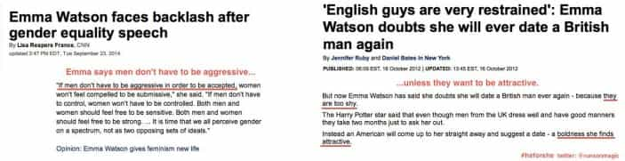
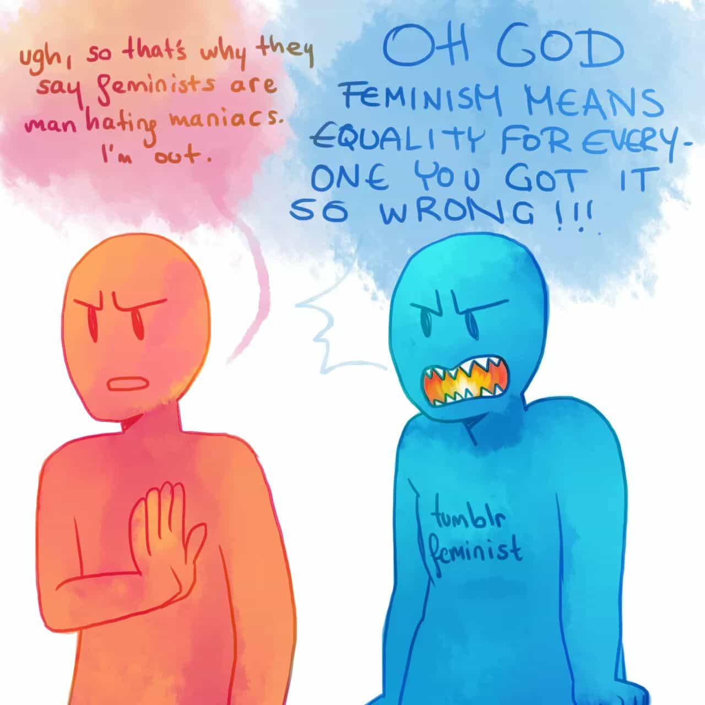

< < < Back
Feminism Is On The Retreat – Return Of Kings
I’m going to boldly declare that feminism is finally ebbing away. It’s amazing to see, since realistically many of us didn’t expect to see it receding for at least another few years. But the change is here.
A campaign called It’s On Us, an attempt to shame men into accommodating women, has been a disastrous failure, receiving (as Aaron Clarey aka Captain Capitalism points out) a massive backlash from people calling out their feminist talking points. Several of the It’s On Us spokes’men’ are high level celebrities, but unfortunately they found out the hard way that it’s feminists who blindly worship celebrities, not normal people. The Youtube videos for proponents of the It’s On Us campaign have been, to use the parlance of the interwebz, downvoted into oblivion: the people have spoken, and the response to the call for men to elevate women even higher has been a giant middle finger.
In one of the most shameful and embarrassing moments of my generation, Emma Watson recently went to the United Nations to give a speech about how evil men are, trying to kick-start a cringe worthy campaign called #HeForShe, asking men to further submit to women’s whims. Although the media tried to hype this up, the people roundly rejected Emma’s talking points. After all, Emma is a known hypocrite. Not only is she dating the very definition of a jerkish Alpha male:
but she has also complained about the soft spoken men her #HeForShe campaign is trying to create:

#GamerGate is a scandal in the video game industry brought about by the revelation that a self-proclaimed feminist slept with influential men in the industry in order to get favors and press. After the revelation, feminists have been trying to say that this is a misogynistic attack on females, not fans (called Gamers) of video games railing against corruption in their favored industry. Gamers were having none of it, and even after the feminists in the video game industry and their enabling male lapdogs have done everything to undermine, coerce, and silence the opposition, the Gamers are still holding them responsible. The feminists even managed to get notorious website 4chan censored. The people responded by making 8chan.
Anti-feminist mode can be found in the most random and seemingly unrelated places. Here is a silly little video called YouTube Poop: Bobby Will Never Be MLG. At the :40 mark Bobby Hill enters a Femi-Nazi Class.
The (current) top comments on the video are lambasting feminism, or decrying that they hope the video creator didn’t think all feminists were like that. All from a random YouTube video that briefly mentions feminism.
Speaking of which, “Not All Feminists Are Like That” has recently emerged as well, meaning that many people who identified as feminists are now separating themselves from the core of the movement. There was a comic on the image sharing site Imgur which exposes the division.

The comic derides Tumblr Feminists, a supposedly more irrational and angry group of feminists. The comments on the picture agree, lamenting that
“If your exposure to feminism has been mostly online, then you haven’t really been exposed to it. This holds true for feminists as well.”
That comment makes no sense (how is offline feminism different from online? It’s an idea…), but it had 1159 upvotes. These people clearly like the selfish perks feminism brings them, but they don’t like the fact that people outside of their belief system are now vocally saying the truth, that feminism is a movement of selfish, hypocritical scam artists and misandrists.
The public which has silently suffered feminism for so long is finally beginning to voice it’s opinion, which is not favorable to the movement all, and already feminists are eating themselves to distance themselves from one another even though they are, at their core, all the same evil people. There’s already a parallel movement called Equalism on the rise: it is the same thing as feminism (lower the standards for women, give undeserving women more cash and prices because she has a vagina, pretend this somehow makes the sexes on par with one another). Feminists can’t handle any real backlash against them—they are all paper tigers, so now the more prescient ones are attempting to relabel themselves as something else to avoid the public’s outcry.
There’s a very visible change happening in the public opinion against feminism. The tide has turned, and feminism is dead. It will take a long time to rot away, yes, and it’s already done so much damage that there may be little worth rebuilding, but it is done. Feminism is done.
The biggest challenge now is to stop it from rising under a new flag (Equalism or other silly -isms). We mustn’t let them change their banners and come back to continue their poison under a different name. They’ve ruined the lives of too many men and women to simply let these creatures go gently into that good night. We must continue to hammer on them, even as they fall apart and consume themselves. The victory over feminism must not be one of magnanimity and half measures. Theirs was a doctrine of genuine evil, and they gave no quarter to good people when they were in charge.
We, in turn, must not give these monsters any back.
Read More: Top 10 Pictures From The Growing “Women Against Feminism” Movement


{kind=link}
{kind=link}
{kind=link}
{kind=link}